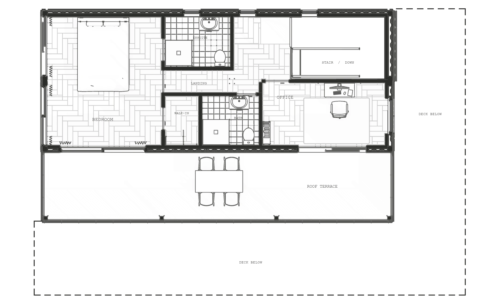
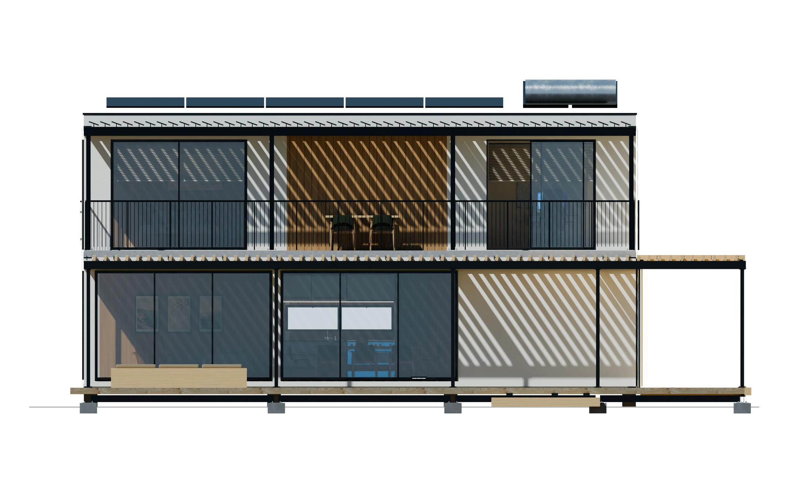
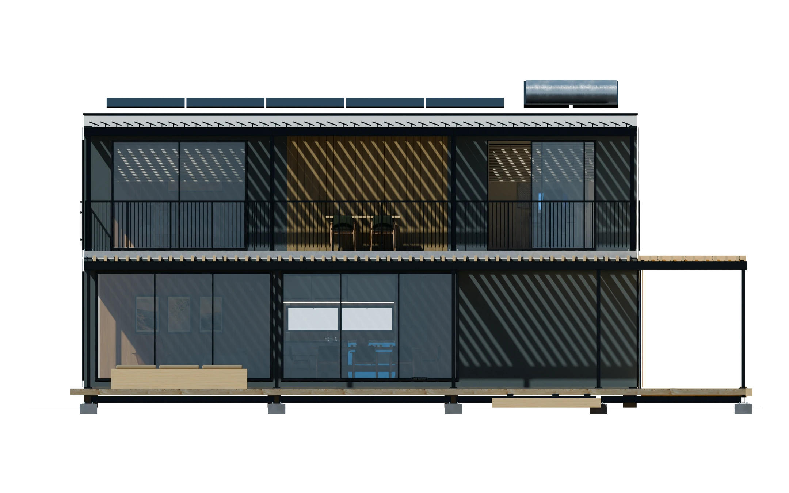
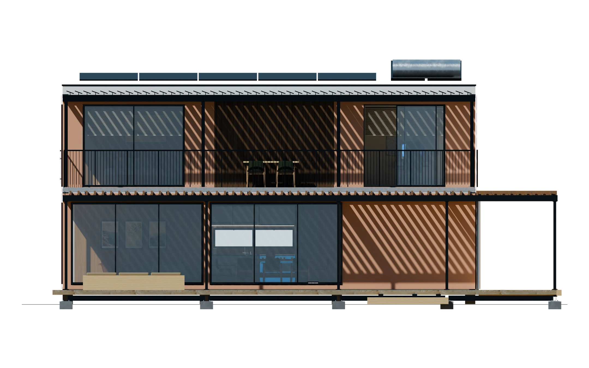
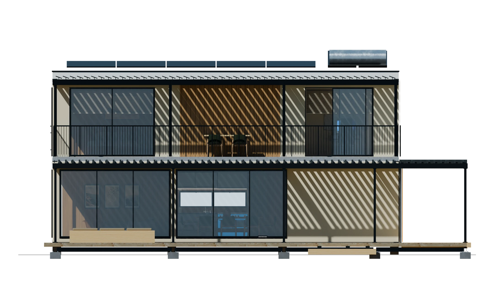

Container HouseTwo-storey home · demonstration project
01 / 12


Drawn from the 3D model · tap to zoomThe plans
Room by room.
- LivingTwo glass walls onto the deck
- DiningA table for eight in the middle of the house
- KitchenAlong the oak wall, under a strip window
- EntryFront door at the east end, by the deck
- Guest WC and laundryBehind a pocket door
- StairTwo flights up to the landing
- DeckWraps the south and east sides
- BedroomThe full width of the upper floor, with glass doors to the terrace
- EnsuiteShower, basin and WC
- Walk-in wardrobeBetween the bedroom and the bathroom
- BathroomShower, basin and WC
- Studio officeA desk, an east window and doors to the terrace
- LandingAt the top of the stair
- Roof terrace29.7 m², with room for a table for four
Ground and upper floor, drawn at 1:100 from the 3D model, so every room is shown at its real size.
Colours
Choose the colours together.
The same house in five palettes, rendered from its 3D model on the south side. Tap a palette to see it.





South side · rendered from the modelIllustrative palettes for this demonstration. The final colours are agreed with each buyer.